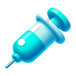

ข้อมูลยาทางวิสัญญี และเครื่องมือคำนวณขนาดยา

ข้อมูลยา 26 รายการ: กลไกการออกฤทธิ์ เภสัชจลนศาสตร์ ขนาดยา ข้อห้ามใช้ การเตรียมยา และการพยาบาล
คำนวณขนาดยาตามน้ำหนัก ทั้ง induction, maintenance, adjuvant, ยาเด็ก และยา CVT